| 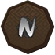 | 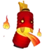 Chouchin Obake
Đăng Lung Quỷ
Lồng đèn
Dang Lung Quy
Long den
| | Chương 1 - Amanojaku Midori đầu tiên có 2 (ải Thường), Chouchin Kozou thứ hai có 2;
Chương 2 - Hakaarashi no Rei thứ hai có 2, Kiseirei đầu tiên có 2;
Chương 3 - Akajita đầu tiên có 2, Heiyo thứ hai có 2;
Chương 5 - Boss Kamigui có 1;
Chương 6 - cả 2 Chouchin Obake đều có 1;
Chương 7 - Kappa thứ hai có 1;
[Nên đánh] Chương 9 - Chouchin Kozou thứ nhất có 3, Chouchin Kozou thứ hai có 1, Boss Mouba có 1;
Chương 13 - Boss Kubinashi có 1;
Chương 17 - Boss Lãnh chúa Arakawa có 1;
Kappa - Tầng 3 có 2;
Ubume - Tầng 5 có 1, tầng 7 đến 10 có 1;
Kamaitachi - Tầng 5 có 2;
[Nên đánh] Umibouzu - Tầng 1 có 3;
[Nên đánh] Aoandon - Tầng 1 có 3;
[Nên đánh] Shishio - Tầng 2 có 3;
[Nên đánh] Kyuuketsuhime - Tầng 2 có 3;
[Nên đánh] Lãnh chúa Arakawa - Tầng 1 đến 3 có 3;
|
| Chouchin Kozou
Đề Đăng Tiểu Tăng
Cầm đèn
De Dang Tieu Tang
Cam den
| | Chương 1 - Amanojaku Midori thứ hai có 2, cả 2 Chouchin Kozou có 1;
Chương 3 - Akajita thứ nhất có 1, Heiyo thứ nhất có 1 (ải Khó có 2), Heiyo thứ hai có 1;
Chương 7 - cả 3 Chouchin Kozou đều có 1;
Chương 8 - Boss Momo có 2;
Chương 9 - cả 2 Chouchin Kozou đều có 1;
Chương 12 - Doujo thứ nhất có 2;
Chương 15 - cả 3 Chouchin Kozou đều có 1;
[Nên đánh] Yêu khí - Gaki có 3, Futakuchi có 4, Kuro Mujou có 3, và Umibouzu có 4;
[Nên đánh] Kappa - Tầng 1/2 có 3;
[Nên đánh] Kamaitachi - Tầng 1 có 3;
Umibouzu - Tầng 1 có 1, tầng 4 có 2;
Aoandon - Tầng 2 có 1, tầng 5 có 3;
Shishio - Tầng 1 có 1, tầng 5 có 3;
[Nên đánh] Kyuuketsuhime - Tầng 2 có 3;
|
| Akajita
Xích Thiệt
Xich Thiet
| | Chương 3 - Akajita thứ nhất có 1, Akajita thứ hai có 1;
Chương 10 - Satori thứ hai có 1;
Chương 15 - Tất cả quái đều có 1 trừ Boss;
[Nên đánh] Chương 16 - Akajita thứ nhất có 1, Akajita thứ hai có 2, Akajita thứ ba có 1;
[Nên đánh] Chương 23 - cả 2 Hone Onna có 3;
Momiji - Tầng 6 và 7 có 1;
Kappa - Tầng 3 có 1;
Ame Onna - Tầng 4 đến 6 có 1;
Ootengu - Tầng 5 và 6 có 1;
[Nên đánh] Kamaitachi - Tầng 1 có 3, tầng 6 có 1;
Umibouzu - Tầng 3 có 2;
[Nên đánh] Aoandon - Tầng 1 có 1, tầng 3 có 3;
[Nên đánh] Shishio - Tầng 4 có 3;
[Nên đánh] Kyuuketsuhime - Tầng 1 có 1, tầng 4 có 3;
Lãnh chúa Arakawa - Tầng 1 đến 3 có 1;
|
| 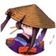 Hakaarashi no Rei
Đạo Mộ Tiểu Quỷ
Hồn Ma
Dao Mo Tieu Quy
Hon Ma
| | Chương 2 - Hokigami có 1, cả 2 Hakaarashi no Rei đều có 1, Kiseirei thứ hai có 2;
Chương 12 - cả 2 Doujo đều có 1;
Chương 23 - cả 2 Hakaarashi no Rei đều có 1, Boss Kairaishi có 3;
Kappa - Tầng 1/2 có 1;
[Nên đánh] Ame Onna - Tầng 1/2/3 có 3;
[Nên đánh] Youtouchi - Tầng 1 có 3;
[Nên đánh] Ubume - Tầng 4 đến 6 có 3;
[Nên đánh] Kamaitachi - Tầng 3 có 3;
[Nên đánh] Umibouzu - Tầng 3 có 3;
Shishio - Tầng 1 có 2;
[Nên đánh] Kyuuketsuhime - Tầng 1 có 3;
[Nên đánh] Lãnh chúa Arakawa - Tầng 1 có 3;
|
| 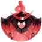 Kiseirei
Ký Sinh Linh
Ky Sinh Linh
| | Chương 2 - Hokigami có 1, Hakaarashi no Rei thứ nhất có 2, cả 2 Kiseirei đều có 1;
Chương 3 - Boss Hououka có 3;
Chương 5 - cả 2 Kanko đều có 1;
Chương 7 - Boss Youko có 1;
Chương 11 - Hồn Samurai thứ nhất có 3;
Chương 12 - Boss Yuki Onna có 1;
[Nên đánh] Chương 16 - Cả 3 Akajita đều có 3;
Chương 26 - cả 2 Kubinashi có 1;
[Nên đánh] Umibouzu - Tầng 2 có 3;
Aoandon - Tầng 1 có 1;
Shishio - Tầng 2 có 1;
[Nên đánh] Kyuuketsuhime - Tầng 1 có 3;
[Nên đánh] Lãnh chúa Arakawa - Tầng 1 đến 3 có 3;
|
| 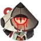 Karakasa Kozou
Đường Chỉ Tán Yêu
Ô Dù
Duong Chi Tan Yeu
O Du
| | [Nên đánh] Chương 4 - Hokigami thứ hai có 2 (ải Khó có 3), cả 2 Karakasa Kozou đều có 1, Amanojaku Aka đầu tiên có 1, Amanojaku Aka thứ hai có 2;
Chương 8 - cả 2 Karakasa Kozou có 1;
Chương 13 - cả 3 Karakasa Kozou có 1;
Yêu khí - Gaki có 1;
[Nên đánh] Ame Onna - Tầng 1 đến 3 có 1, tầng 4 đến 6 có 3;
[Nên đánh] Ubume - Tầng 2 có 3;
[Nên đánh] Umibouzu - Tầng 2 có 1, tầng 4 có 3;
[Nên đánh] Aoandon - Tầng 2 có 3
[Nên đánh] Shishio - Tầng 1 có 3
|
| 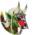 Amanojaku Midori
Thiên Tà Lục Yêu
Thien Ta Luc Yeu
| | Chương 1 - cả 2 Amanojaku Midori có 1, Chouchin Kozou đầu tiên có 2;
Chương 2 - Boss Zashiki Warashi có 2;
Chương 5 - Kanko cuối cùng có 3;
[Nên đánh] Chương 6 - cả 2 Amanojaku Ao có 3, Boss Kodokushi có 3;
Chương 8 - cả 2 Amanojaku Ao có 1;
Chương 13 - cả 3 Karakasa Kozou có 2;
Chương 15 - cả 3 Amanojaku Ao có 1;
[Nên đánh] Yêu khí - Shouzu có 8, Gaki có 6, Hone Onna có 6, Kyonshi Ani có 4, và Umibouzu có 1;
Kappa - Tầng 6 có 1;
Youtouchi - Tầng 6 và 7 có 1;
Umibouzu - Tầng 5 có 1;
Aoandon - Tầng 5 có 2;
[Nên đánh] Shishio - Tầng 3 có 3;
[Nên đánh] Kyuuketsuhime - Tầng 3 có 3;
|
| 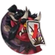 Amanojaku Aka
Thiên Tà Xích Yêu
Thien Ta Xich Yeu
| Quỷ Đỏ
Quy Do
| Chương 4 - Karakasa Kozou đầu tiên có 3, Karakasa Kozou thứ hai có 1 (ải Thường), cả 2 Amanojaku Aka có 1;
Chương 5 - Norikabe đầu tiên có 2, Norikabe thứ hai có 3, cả 2 Hokigami có 1;
Chương 6 - cả 2 Kochosei có 2;
Chương 7 - Boss Youko có 2;
Chương 11 - cả 2 Hitotsume Kozou có 2;
[Nên đánh] Chương 13 - cả 3 Gaki có 3, cả 3 Karakasa Kozou có 1;
[Nên đánh] Chương 14 - cả 3 Hokigami có 3, Boss Yumekui có 3;
Chương 15 - cả 3 Amanojaku Ao có 2;
Ngự hồn - Tầng 1 có 2;
Yêu khí - Kuro Mujou, Hone Onna, Shouzu, và Kyonshi Ani có 1, Umibouzu có 2;
Kappa - Tầng 6 có 1;
[Nên đánh] Kamaitachi - Tầng 2 có 3;
Umibouzu - Tầng 1 có 1, tầng 5 có 2;
[Nên đánh] Shishio - Tầng 3 có 3, tầng 6 có 1;
Kyuuketsuhime - Tầng 3 có 1;
|
| 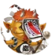 Amanojaku Ki
Thiên Tà Hoàng Yêu
Thien Ta Hoang Yeu
| Cái Trống
Cai Trong
| Chương 3 - cả 2 Amanojaku Ki có 1, Akajita thứ hai có 1;
[Nên đánh] Chương 5 - Hokigami thứ hai có 2, Kanko đầu tiên có 2;
[Nên đánh] Chương 8 - cả 2 Amanojaku Ao có 2;
Chương 12 - Oguna đầu tiên có 1;
Ngự hồn - Tầng 1 có 1;
[Nên đánh] Yêu khí - Umibouzu có 3, Shouzu có 2, và Kyonshi Ani có 1;
Momiji - Tầng 4 và 5 có 1;
Kappa - Tầng 5/6 có 1;
Ubume - Tầng 5 có 1;
Ootengu - Tầng 2 có 1;
Umibouzu - Tầng 1 có 2, tầng 5 có 1;
[Nên đánh] Aoandon - Tầng 4 có 3;
[Nên đánh] Shishio - Tầng 1 có 3;
[Nên đánh] Kyuuketsuhime - Tầng 3 có 3;
|
| 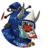 Amanojaku Ao
Thiên Tà Thanh Yêu
Thien Ta Thanh Yeu
| Con Diều
Con Dieu
| Chương 2 - Boss Zashiki Warashi có 1;
Chương 5 - Boss Kamigui có 2;
Chương 6 - cả 2 Amanojaku Ao có 1;
Chương 8 - cả 2 Amanojaku Ao có 1, Boss Momo có 1;
[Nên đánh] Chương 10 - cả 2 Ushi no Kokumairi có 2;
Chương 11 - Boss Momiji có 2;
Ngự hồn - Tầng 1 có 1;
Yêu khí - Futakuchi có 3, Kyonshi Ani có 3, và Umibouzu có 1;
Kappa - Tầng 6 có 1;
[Nên đánh] Youtouchi - Tầng 1 đến 3 có 4, tầng 4 đến 9 có 3, tầng 10 có 2;
Ubume - Tầng 4 đến 6 có 1;
Kamaitachi - Tầng 4 có 3;
Umibouzu - Tầng 5 có 1;
Aoandon - Tầng 4 có 2;
Shishio - Tầng 2 có 3;
Kyuuketsuhime - Tầng 3 có 2;
|
| 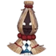 Hokigami
Trửu Thần
Chổi
Truu Than
Choi
| | Chương 2 - Hokigami có 1;
Chương 3 - Amanojaku Ki đầu tiên có 2 (ải Khó có 1);
Chương 4 - cả 2 Hokigami có 1, Boss Ame Onna có 2;
Chương 5 - cả 2 Hokigami có 1;
[Nên đánh] Chương 6 - cả 2 Chouchin Obake có 3;
Chương 7 - Koi đầu tiên có 1, thứ hai có 3;
Chương 8 - cả 2 Momo có 1, Karakasa Kozou đầu tiên có 3, Karakasa Kozou thứ hai có 2, Boss Momo có 1;
Chương 9 - Tesso đầu tiên có 3, và Tesso thứ hai có 2;
Chương 12 - Umibouzu đầu tiên có 1;
Chương 14 - cả 3 Hokigami có 1;
[Nên đánh] Yêu khí - Futakuchi có 4, Kuro Mujou có 3, Hone Onna có 4, và Kyonshi Ani có 2;
Ubume - Tầng 1 đến 3 có 3;
[Nên đánh] Ootengu - Tầng 1 có 4, tầng 2 đến 10 có 3;
Kamaitachi - Tầng 4 có 3;
Umibouzu - Tầng 1 có 3;
Aoandon - Tầng 2 có 3;
Shishio - Tầng 1 có 1, tầng 4 có 3;
Kyuuketsuhime - Tầng 2 có 3;
|
| 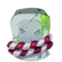 Norikabe
Đồ Bích
Đồ Bích
| Tường Đá
Tuong Da
| Chương 3 - Amanojaku Ki đầu tiên có 1 (ải Khó có 2);
Chương 4 - Hokigami đầu tiên có 2, Hokigami thứ hai có 1 (ải Thường), Karakasa Kozou thứ hai có 2 (ải Khó có 3), Amanojaku Aka đầu tiên có 2 (ải Khó có 3);
Chương 5 - Norikabe đầu tiên có 1 trong ải Thường (2 trong ải Khó), Norikabe thứ hai có 1, Hokigami đầu tiên có 2;
Chương 6 - cả 2 Kochosei có 1;
Chương 7 - Kappa đầu tiên có 2, Boss Youko có 3;
Chương 8 - Momo đầu tiên có 2, Momo thứ hai có 3;
Chương 11 - Hitotsume Kozou đầu tiên có 1, Gaki đầu tiên có 1;
Chương 12 - Umibouzu đầu tiên có 2, Umibouzu thứ hai có 1;
[Nên đánh] Chương 14 - cả 3 Norikabe có 6;
Ngự hồn - Tầng 1 có 1;
Yêu khí - Gaki có 1, Kuro Mujou có 4;
Momiji - Tầng 4 và 5 có 1;
Ubume - Tầng 1 đến 3 có 1;
Youtouchi - Tầng 4 và 5 có 1;
Umibouzu - Tầng 1 có 1;
Aoandon - Tầng 1 có 3;
Kyuuketsuhime - Tầng 1 có 3;
|
|  Hắc Báo
Hac Bao
| | Chương 5 - Norikabe đầu tiên có 1 trong ải Thường;
[Nên đánh] Kappa - Tầng 4 có 3;
|
| 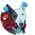 Ma Chó
Cà chua
Ma Cho
Ca chua
| | Chương 1 - Amanojaku Midori đầu tiên có 2 trong ải Khó;
[Nên đánh] Chương 7 - cả 2 Chouchin Kozou đầu tiên có 3, Chouchin Kozou thứ ba có 1, Kappa cuối cùng có 2;
[Nên đánh] Chương 28 - Kyonshi Imouto có 3;
[Nên đánh] Umibouzu - Tầng 2 có 3;
[Nên đánh] Aoandon - Tầng 1 có 3;
Kyuuketsuhime - Tầng 5 có 3;
|
| 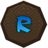 | 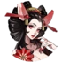 Sanbi no Kitsune
Tam Vĩ Hồ
Tam Vi Ho
| Cây Anh Đào
Màu Đỏ
Cay Anh Dao
Mau Do
| Chương 6 - cả 2 Kochosei có 1;
Chương 18 - cả 3 Sanbi no Kitsune có 2;
Ngự hồn - Tầng 1 có 1, Nghiệp Nguyên Hỏa có 1;
Momiji - Tầng 3 có 1;
Ame Onna - Tầng 7 có 1;
Youtouchi - Tầng 4 có 3;
[Nên đánh] Ootengu - Tầng 1 đến 4 có 4, tầng 5/6 có 3, tầng 9 có 1;
Kamaitachi - Tầng 6 có 3;
Umibouzu - Tầng 6 có 2;
Aoandon - Tầng 3 có 1;
Kyuuketsuhime - Tầng 5 có 2;
|
| Zashiki Warashi
Tọa Phu Đồng Tử
Toa Phu Dong Tu
| Quỷ Hỏa
Sừng
Quy Hoa
Sung
| Chương 2 - Boss Zashiki Warashi có 1;
Chương 7 - Boss Kanko có 2;
Chương 10 - Satori thứ hai có 2, Kairaishi thứ hai có 2;
Chương 23 - cả 2 Hakaarashi no Rei có 2;
Ngự hồn - Tầng 3 có 2 và tầng 6 có 1;
[Nên đánh] Ame Onna - Tầng 1 có 3;
Kappa - Tầng 2/6 có 1;
Umibouzu - Tầng 2 có 2;
|
| Koi
Lý Ngư Tinh
Ly Ngu Tinh
| Hồ Nước
Bong Bóng
Đuôi
Ho Nuoc
Bong Bong
Duoi
| [Nên đánh] Chương 7 - Koi đầu tiên có 3, Koi thứ hai có 1, Kappa đầu tiên có 1, Chouchin Kozou đầu tiên có 2;
Chương 27 - Koi có 1, Kappa có 3;
Ngự hồn - Tầng 2/3/9 có 1;
Kappa - Tầng 8/9 có 2, tầng 10 có 1;
Youtouchi - Tầng 8 đến 10 có 1;
Kamaitachi - Tầng 5 và 9 có 2;
[Nên đánh] Umibouzu - Tầng 4 có 4, tầng 6 có 2, tầng 3/7/8/9 có 1;
Aoandon - Tầng 6 có 2;
Shishio - Tầng 2/8 có 1;
Lãnh chúa Arakawa - Tầng 4 đến 6 có 1;
|
| Kyuinochi Neko
Cửu Mệnh Miêu
Mèo
Cuu Menh Mieu
Meo
| | Chương 1 - Boss Kyuinochi Neko có 3;
Chương 15 - cả 3 Chouchin Kozou có 2, Boss Kyonshi Imouto có 3;
[Nên đánh] Chương 18 - cả 3 Kyuinochi Neko có 6, cả 3 Sanbi no Kitsune có 2;
Chương 25 - Kodokushi đầu tiên có 1;
[Nên đánh] Ame Onna - Tầng 1 đến 3 có 3;
Youtouchi - Tầng 8 và 9 có 1 , tầng 10 có 2;
Ubume - Tầng 9 có 2;
Kamaitachi - Tầng 4 có 2;
Umibouzu - Tầng 6 có 1;
[Nên đánh] Kyuuketsuhime - Tầng 4 có 4;
|
| Bakedanuki
Ly Miêu
Ly Mieu
| | Chương 10 - Satori đầu tiên có 3, Kairaishi đầu tiên có 2;
Chương 17 - cả 3 Bakedanuki có 1;
Ngự hồn - Tầng 9 có 1;
Momiji - Tầng 7 có 1;
[Nên đánh] Youtouchi - Tầng 1 đến 3 có 4, tầng 4 đến 10 có 3;
Ootengu - Tầng 2 có 3;
Kamaitachi - Tầng 8 có 2;
Umibouzu - Tầng 4 có 1;
Aoandon - Tầng 2 có 2;
Kyuuketsuhime - Tầng 3 có 1;
|
| Kappa
Hà Đồng
Ha Dong
| Hồ Nước
Lá Sen
Ho Nuoc
La Sen
| Chương 7 - cả 2 Kappa có 1;
Chương 23 - cả 2 Hakaarashi no Rei có 1;
Chương 27 - Koi có 3, Kappa có 1;
Ngự hồn - Tầng 2 có 1;
Kappa - Tầng 1 đến 10 có 1;
Ame Onna - Tầng 8 có 5;
Youtouchi - Tầng 8 đến 10 có 1;
Kamaitachi - Tầng 7 có 4;
[Nên đánh] Umibouzu - Tầng 3/5 có 5, tầng 6 có 3, tầng 7 có 2, tầng 4/8/9/10 có 1;
Shishio - Tầng 2 có 2;
Kyuuketsuhime - Tầng 3 có 1;
[Nên đánh] Lãnh chúa Arakawa - Tầng 4 đến 6 có 3;
|
| Oguna
Đồng Nam
Chim xanh
Dong Nam
Chim xanh
| Cánh
Vũ Y
Hiến Tế
Canh
Vu Y
Hien Te
| Chương 12 - cả 2 Oguna có 1;
Ngự hồn - Tầng 4 có 1;
[Nên đánh] Kappa - Tầng 1 có 3;
Ame Onna - Tầng 10 có 1;
Youtouchi - Tầng 9 có 2;
Ootengu - Tầng 8 và 9 có 1;
Ubume - Tầng 3 có 1;
Kamaitachi - Tầng 10 có 2;
Umibouzu - Tầng 8 có 1;
[Nên đánh] Aoandon - Tầng 3 có 3;
Kyuuketsuhime - Tầng 10 có 1;
|
| 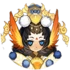 Doujo
Đồng Nữ
Chim vàng
Dong Nu
Chim vang
| Cánh
Vũ Y
Bé Gái Nhỏ
Canh
Vu Y
Be Gai Nho
| [Nên đánh] Chương 3 - Heiyo đầu tiên có 2 trong ải Thường (1 trong ải Khó), Akajita thứ hai có 2, Amanojaku Ki cuối cùng có 3;
Chương 11 - Boss Momiji có 1;
[Nên đánh] Chương 12 - Doujo đầu tiên có 1, Doujo thứ hai có 3, Oguna thứ hai có 1;
[Nên đánh] Ngự hồn - Tầng 2 có 2, tầng 4 có 1;
Kappa - Tầng 1 có 1;
Ubume - Tầng 3 có 1;
Kamaitachi - Tầng 10 có 2;
Umibouzu - Tầng 8 có 1;
Aoandon - Tầng 3 có 1;
[Nên đánh] Lãnh chúa Arakawa - Tầng 2 có 3;
|
| 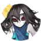 Gaki
Ngạ Quỷ
Nga Quy
| | Chương 9 - Boss Mouba có 3;
Chương 11 - Gaki đầu tiên có 1, Gaki thứ hai có 3;
Chương 13 - cả 3 Gaki có 1;
Chương 16 - cả 3 Gaki có 1;
Ngự hồn - Tầng 8 có 1;
Yêu khí - Gaki có 3;
[Nên đánh] Momiji - Tầng 1 đến 3 có 4, tầng 4 đến 10 có 3;
Umibouzu - Tầng 2 có 1;
Aoandon - Tầng 5 có 2;
Kyuuketsuhime - Tầng 7 có 2;
|
| 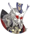 Kodokushi
Vu Cổ Sư
Vu Co Su
| Độc
Trùng
Doc
Trung
| Chương 6 - Boss Kodokushi có 1;
Chương 25 - cả 2 Kodokushi có 1;
[Nên đánh] Ngự hồn - Tầng 6 có 1;
Ame Onna - Tầng 7 đến 10 có 1;
[Nên đánh] Kamaitachi - Tầng 3 có 3;
Aoandon - Tầng 2 có 1;
Kyuuketsuhime - Tầng 2 có 1;
|
| 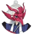 Karasu Tengu
Nha Thiên Cẩu
Nha Thien Cau
| Naginata
Cánh
Mặt Nạ
Naginata
Canh
Mat Na
| Chương 3 - cả 2 Akajita có 1;
Chương 9 - cả 2 Yamausagi có 1, Boss Mouba có 2;
[Nên đánh] Chương 12 - Umibouzu thứ hai có 2, cả 2 Oguna có 2 (tối đa có 4 do Oguna hồi sinh);
Chương 17 - cả 3 Karasu Tengu có 1;
Chương 18 - Boss Ootengu có 3;
[Nên đánh] Chương 25 - Heiyo thứ ba có 3;
Ngự hồn - Tầng 6 có 1;
Momiji - Tầng 4 có 2 và Tầng 9 có 1;
Kappa - Tầng 9 có 2;
Ame Onna - Tầng 7 đến 9 có 3, tầng 10 có 5;
Youtouchi - Tầng 6/7 có 1;
Ubume - Tầng 3 có 2;
[Nên đánh] Ootengu - Tầng 5 có 4;
[Nên đánh] Kamaitachi - Tầng 5 và 9 có 3;
Umibouzu - Tầng 5 có 1, tầng 9 có 3;
Aoandon - Tầng 2 có 1
Kyuuketsuhime - Tầng 7 có 2
[Nên đánh] Lãnh chúa Arakawa - Tầng 4 có 4;
|
| 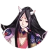 Kamigui
Thực Phát Quỷ
Thuc Phat Quy
| | Chương 5 - Boss Kamigui có 1;
Chương 10 - Boss Shuten Doji có 2;
Chương 21 - cả 3 Kamigui có 1;
Chương 28 - Menreiki có 1;
Ngự hồn - Tầng 7 có 1;
[Nên đánh] Kappa - Tầng 3 có 3;
Aoandon - Tầng 4/10 có 1;
[Nên đánh] Shishio - Tầng 4/5 có 1, tầng 6 có 4, tầng 7/8 có 3, tầng 9/10 có 2;
Kyuuketsuhime - Tầng 4 có 1;
|
| Hồn Samurai
Võ Sĩ Chi Linh
Hon Samurai
Vo Si Chi Linh
| | Chương 11 - cả 2 Hồn Samurai có 1;
Chương 12 - Boss Yuki Onna có 2;
Chương 21 - Enenra thứ nhất có 3, Enenra thứ hai có 2, Kyuuketsuhime thứ hai có 1;
Chương 25 - Kodokushi thứ hai có 2;
[Nên đánh] Kappa - Tầng 3 có 3;
[Nên đánh] Ame Onna - Tầng 3 có 3;
Ootengu - Tầng 10 có 1;
Umibouzu - Tầng 4/8 có 1;
Kyuuketsuhime - Tầng 1 có 1, tầng 7 có 2;
|
| Ame Onna
Vũ Nữ
Vu Nu
| Khóc
Mưa
Dù
Khoc
Mua
Du
| Chương 4 - Boss Ame Onna có 1;
Ngự hồn - Tầng 6 có 1;
Momiji - Tầng 6 có 2;
Ame Onna - Tầng 1 đến 10 có 1;
Kappa - Tầng 7/9 có 1;
[Nên đánh] Youtouchi - Tầng 3 có 3;
Ootengu - Tầng 7 có 1;
[Nên đánh] Umibouzu - Tầng 5 có 3, tầng 7/10 có 2;
Aoandon - Tầng 9 có 1;
|
| 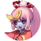 Kyonshi Imouto
Khiêu Khiêu Muội Muội
Khieu Khieu Muoi Muoi
| | [Nên đánh] Chương 12 - Boss Yuki Onna có 1, có thể dùng Kyonshi Ani để hồi sinh;
Chương 15 - Boss Kyonshi Imouto có 1;
Chương 28 - Kyonshi Imouto có 1, Susabi có 3;
[Nên đánh] Momiji - Tầng 2 có 1;
Kappa - Tầng 9 có 1;
Ubume - Tầng 4 đến 6 có 1;
Kamaitachi - Tầng 6 có 1;
Umibouzu - Tầng 7 có 2;
[Nên đánh] Shishio - Tầng 3/5 có 1;
Kyuuketsuhime - Tầng 6 có 2;
|
| 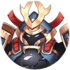 Heiyo
Binh Dũng
Binh Dung
| Binh Giáp
Hóa Đá
Binh Giap
Hoa Da
| Chương 3 - cả 2 Heiyo có 1;
Chương 10 - Boss Shuten Doji có 1;
Chương 21 - Enenra thứ hai có 1, Kamigui thứ 2 và 3 có 1;
Chương 25 - cả 3 Heiyo có 1;
[Nên đánh] Ngự hồn - Orochi Tầng 2 có 1, Nghiệp Nguyên Hỏa có 1;
Kết giới/PVP - Ít gặp;
Momiji - Tầng 4/5/8/10 có 1;
Kappa - Tầng 4 và 10 có 1;
[Nên đánh] Ame Onna - Tầng 7 có 4;
Umibouzu - Tầng 7 có 1;
Aoandon - Tầng 4 có 1;
Shishio - Tầng 1 có 1, tầng 8 có 2;
Kyuuketsuhime - Tầng 7 có 1;
|
| 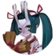 Ushi no Kokumairi
Sửu Thì Chi Nữ
Sửu nữ
Suu Thi Chi Nu
Suu nu
| Người Rơm
Trù Ếm
Nguoi Rom
Tru Em
| Chương 10 - cả 2 Ushi no Kokumairi có 1;
[Nên đánh] Chương 21 - Kamigui đầu tiên có 3, Kamigui thứ 2 và 3 có 2;
Ngự hồn - Tầng 5/7 có 1;
Momiji - Tầng 4 và 9 có 1;
[Nên đánh] Kappa - Tầng 4 có 2;
Ame Onna - Tầng 4 đến 6 có 1;
Umibouzu - Tầng 6 có 1;
Aoandon - Tầng 4 và 10 có 1;
Kyuuketsuhime - Tầng 4 có 1;
|
| Hitotsume Kozou
Độc Nhãn Tiểu Tăng
Sư chột
Doc Nhan Tieu Tang
Su chot
| Mắt, Phật Thạch
Mắt, Sư Thầy
Kinh Kim Cang
Mat, Phat Thach
Mat, Su Thay
Kinh Kim Cang
| [Nên đánh] Chương 11 - Hồn Samurai thứ hai có 3, cả 2 Hitotsume Kozou có 2;
Chương 25 - Kodokushi thứ hai có 1, Itsumade thứ hai có 2;
Ngự hồn - Tầng 1/5 có 1;
Momiji - Tầng 8 đến 10 có 1;
Kappa - Tầng 2 có 1;
Ootengu - Tầng 4 có 1;
Kamaitachi - Tầng 5 và 9 có 1;
Aoandon - Tầng 5 có 1;
Shishio - Tầng 3/5/10 có 1;
|
| 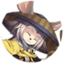 Tesso
Thiết Thử
Thiet Thu
| Tài Phú
May Mắn
Tai Phu
May Man
| Chương 9 - Tesso đầu tiên có 1, tesso thứ hai có 2, Chouchin Kozou thứ hai có 2, Yamausagi thứ hai có 1;
[Nên đánh] Yêu khí - Quái Xu có 16;
Momiji - Tầng 5 có 2;
Ame Onna - Tầng 1 đến 3 có 1;
Umibouzu - Tầng 6 có 1;
|
| Shouzu
Tiêu Đồ
Sò
Tieu Do
So
| Quạt
Nước
Vỏ Sò
Đuôi
Quat
Nuoc
Vo So
Duoi
| Chương 22 - Boss Jorogumo có 1;
Chương 25 - 2 Heiyo đầu tiên có 1;
Ngự hồn - Tầng 3/8/9/10 có 1, Nghiệp Nguyên Hỏa có 1;
[Nên đánh] Yêu khí - Shouzu có 3;
Kết giới/PVP - Dễ gặp;
Momiji - Tầng 6 đến 8 có 1, tầng 9/10 có 2;
Kappa - Tầng 8/10 có 2;
Ame Onna - Tầng 8 có 1;
Youtouchi - Tầng 10 có 1;
Ootengu - Tầng 4/5/10 có 1;
Kamaitachi - Tầng 8 có 1;
Umibouzu - Tầng 2 có 1;
Aoandon - Tầng 7/9/10 có 1;
Shishio - Tầng 10 có 1;
Kyuuketsuhime - Tầng 7/9 có 1;
Lãnh chúa Arakawa - Tầng 7 có 1;
|
| 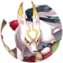 Kanko
Quản Hồ
Quan Ho
| | Chương 5 - Kanko đầu tiên có 2, Kanko thứ hai có 1;
Chương 7 - cả 3 Chouchin Kozou có 1;
Chương 11 - Hitotsume Kozou thứ hai có 1, Gaki đầu tiên có 2, Gaki thứ hai có 1;
Ngự hồn - Tầng 8 có 1;
[Nên đánh] Momiji - Tầng 1 đến 3 có 4, tầng 4 đến 10 có 3;
Ame Onna - Tầng 9 có 5;
Kappa - Tầng 7 có 3;
Kamaitachi - Tầng 2 có 3;
Umibouzu - Tầng 6 có 1, tầng 10 có 2;
Aoandon - Tầng 6 có 2;
Kyuuketsuhime - Tầng 4 có 1, tầng 6 có 3;
Lãnh chúa Arakawa - Tầng 3 có 3;
|
| Yamausagi
Sơn Thố
Son Tho
| | [Nên đánh] Chương 9 - Yamausagi đầu tiên có 4, Yamausagi thứ hai có 3;
Chương 13 - Boss Kubinashi có 1;
Chương 16 - cả 3 Gaki có 1;
Chương 17 - Boss Lãnh chúa Arakawa có 1;
Chương 23 - cả 3 Mouba có 3;
Chương 25 - 2 Heiyo đầu tiên có 2;
Ngự hồn - Tầng 7 có 1;
Kappa - Tầng 5 có 1;
PVP/Kết giới - Rất dể gặp;
Aoandon - Tầng 7 có 2;
Shishio - Tầng 9/10 có 1;
Lãnh chúa Arakawa - Tầng 5 có 4;
|
| Hotarugusa
Huỳnh Thảo
Huynh Thao
| Bồ Công Anh
Cắn
Bo Cong Anh
Can
| Chương 21 - Boss Hotarugusa có 2;
Chương 23 - Boss Hotarugusa có 3;
Chương 26 - cả 3 Doumeki có 1, cả 2 Satori có 1;
Ngự hồn - Tầng 2/9/10 có 1;
[Nên đánh] Ngự hồn - Nghiệp Nguyên Hỏa - có 4;
Kappa - Tầng 4 và 9 có 1, tầng 10 có 3;
Ame Onna - Tầng 7 có 2;
Ubume - Tầng 5 có 1, tầng 7 đến 10 có 1;
Ootengu - Tầng 7 có 4;
Kamaitachi - Tầng 8 có 5;
Umibouzu - Tầng 8 có 2;
Aoandon - Tầng 7 có 1;
Shishio - Tầng 3 đến 10 có 1;
|
| 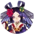 Kochosei
Hồ Điệp Tinh
Bướm
Ho Diep Tinh
Buom
| Trống Tay
Khả Ái
Trong Tay
Kha Ai
| Chương 6 - cả 2 Kochosei có 1;
Chương 8 - Boss Momo có 2;
Chương 25 - Itsumade thứ 2 có 1;
Ngự hồn - Tầng 3/8 có 1, Nghiệp Nguyên Hỏa có 1;
Ame Onna - Tầng 7 có 1;
Kappa - Tầng 5 có 2;
[Nên đánh] Youtouchi - Tầng 2 có 3, tầng 4/5 có 1;
Ubume - Tầng 1 đến 3 có 1;
Kamaitachi - Tầng 1 có 1;
Umibouzu - Tầng 8 có 1;
Aoandon - Tầng 5 có 2, tầng 10 có 1;
Shishio - Tầng 3/10 có 1;
Lãnh chúa Arakawa - Tầng 4 đến 6 có 3;
|
| 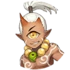 Yamawaro
Sơn Đồng
Son Dong
| Thạch Chùy
Quái Lực
Thach Chuy
Quai Luc
| Chương 8 - Karakasa Kozou thứ hai có 1;
Chương 16 - cả 3 Gaki có 2;
Ngự hồn - Tầng 1 có 1;
Momiji - Tầng 3 có 2;
[Nên đánh] Kappa - Tầng 2 có 3;
[Nên đánh] Ootengu - Tầng 3 có 3;
Kamaitachi - Tầng 4 có 1;
Umibouzu - Tầng 6 có 2;
Aoandon - Tầng 6 có 1, tầng 7/9 có 2;
Shishio - Tầng 5 có 3;
|
| 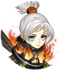 Kubinashi
Vô Thủ
Vo Thu
| | Chương 13 - Gaki cuối cùng có 1, Karakasa Kozou cuối cùng có 1, Boss Kubinashi có 1;
Chương 26 - cả 2 Kubinashi có 1;
Momiji - Tầng 3 có 2;
Kappa - Tầng 7 có 3;
[Nên đánh] Ame Onna - Tầng 2 có 3, tầng 8 có 4;
[Nên đánh] Ootengu - Tầng 1 có 3;
Umibouzu - Tầng 6/8 có 1;
Aoandon - Tầng 6 có 1, tầng 7 có 2;
|
| 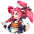 Satori
Giác
Giac
| | Chương 10 - cả 2 Satori có 1, cả 2 Kairaishi có 1;
Chương 11 - Boss Momiji có 2;
Chương 28 - cả 2 Kairaishi có 1;
Ngự hồn - Tầng 10 có 1;
[Nên đánh] Momiji - Tầng 1 có 3;
Kappa - Tầng 4 có 3;
Ame Onna - Tầng 4 đến 6 có 3;
[Nên đánh] Ubume - Tầng 1 đến 3 có 3;
Kamaitachi - Tầng 3 có 1;
[Nên đánh] Aoandon - Tầng 4 có 4, tầng 7 có 2;
Shishio - Tầng 3 có 1;
Kyuuketsuhime - Tầng 4 có 2;
|
| 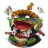 Jikigaeru
Thanh Oa Từ Khí
Cóc
Thanh Oa Tu Khi
Coc
| Xúc Xắc
Hũ
Gian Lận
Xuc Xac
Hu
Gian Lan
| Chương 4 - Boss Ame Onna có 1;
[Nên đánh] Ngự hồn - Tầng 3 có 1;
Kappa - Tầng 9 có 3;
Ame Onna - Tầng 10 có 5;
Ootengu - Tầng 3 có 1;
Kamaitachi - Tầng 4 có 1;
[Nên đánh] Aoandon - Tầng 5 có 2;
Kyuuketsuhime - Tầng 10 có 5;
|
| 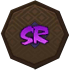 | Momo no Sei
Đào Hoa Yêu
Đào lùn
Đào ngắn
Dao Hoa Yeu
Dao lun
Dao ngan
| Hoa
Vũ
Hoa
Vu
| Chương 8 - Boss Momo có 1;
[Nên đánh] Ngự hồn - Tầng 3 có 1;
Momiji - Tầng 8 đến 10 có 1;
Kappa - Tầng 5 có 1, tầng 10 có 2;
Youtouchi - Tầng 6/10 có 1;
Ubume - Tầng 8 có 2, tầng 9 có 1;
Ootengu - Tầng 8 có 5;
Aoandon - Tầng 8 có 1;
Shishio - Tầng 10 có 1;
Lãnh chúa Arakawa - Tầng 10 có 1;
|
| 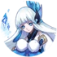 Yuki Onna
Tuyết Nữ
Tuyet Nu
| | Chương 8 - cả 2 Sakura có 1;
[Nên đánh] Chương 12 - cả 2 Doujo có 1, Boss Yuki Onna có 2;
Momiji - Tầng 6 có 1;
Ootengu - Tầng 5/9/10 có 1;
Shishio - Tầng 6 có 1;
[Nên đánh] Lãnh chúa Arakawa - Tầng 6 có 4;
|
| Shiro Mujou
Quỷ Sứ Bạch
Quy Su Bach
| Minh Giới
Trắng
Đoạt Mệnh
Minh Gioi
Trang
Doat Menh
| Chương 16 - Boss Hangan có 1;
Chương 24 - cả 3 Kiyohime có 1, boss Hone Onna có 1;
Chương 28 - boss Menreiki có 1;
Ngự hồn - Tầng 4 có 1;
Kappa - Tầng 6 có 1;
Ame Onna - Tầng 9 có 2;
Youtouchi - Tầng 7 có 1;
Ubume - Tầng 6 có 1;
Ootengu - Tầng 6 có 2;
Kamaitachi - Tầng 1 có 1;
Aoandon - Tầng 8 có 1;
Kyuuketsuhime - Tầng 9 có 2, tầng 10 có 1;
|
| Kuro Mujou
Quỷ Sứ Hắc
Quy Su Hac
| Lưỡi Hái
Đoản Đao
Minh Giới
Luoi Hai
Doan Dao
Minh Gioi
| Chương 16 - Boss Hangan có 1;
Chương 24 - cả 3 Kiyohime có 2;
Chương 28 - Enma có 2, boss Menreiki có 1;
Ngự hồn - Tầng 4 có 1;
Yêu khí - Kuro Mujou có 3;
[Nên đánh] Kappa - Tầng 6 có 3;
Youtouchi - Tầng 7 có 1;
[Nên đánh] Kamaitachi - Tầng 2 có 1;
Aoandon - Tầng 8 có 1;
Kyuuketsuhime - Tầng 10 có 1;
|
| Mouba
Mạnh Bà
Manh Ba
| Bát
Cầm
Nha Nha
Bat
Cam
Nha Nha
| Chương 9 - Boss Mouba có 2;
Chương 23 - cả 3 Mouba có 1;
[Nên đánh] Ngự hồn - Tầng 5 có 2, tầng 6 có 1;
Kappa - Tầng 5 có 1;
Ubume - Tầng 7 có 1, 8 có 2, 9/10 có 3;
Kamaitachi - Tầng 3 có 1;
Aoandon - Tầng 9/10 có 1;
Shishio - Tầng 9 có 2;
Kyuuketsuhime - Tầng 8 có 2;
|
| Inugami
Khuyển Thần
Cậu Vàng
Chó
Cún
Khuyen Than
Cau Vang
Cho
Cun
| Gâu Gâu
Thủ Hộ
Gau Gau
Thu Ho
| [Nên đánh] Chương 10 - Satori thứ hai có 1, Kairaishi thứ hai có 1;
Ngự hồn - Tầng 4 có 1;
Momiji - Tầng 8 đến 10 có 1;
Kamaitachi - Tầng 9 có 1;
Aoandon - Tầng 10 có 1;
Kyuuketsuhime - Tầng 5 có 1;
|
| 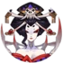 Hone Onna
Cốt Nữ
Cot Nu
| Đầu Lâu
Oán Hận
Dau Lau
Oan Han
| Chương 10 - Boss Shuten Doji có 2;
Chương 11 - Boss Momiji có 1;
Chương 13 - Boss Kubinashi có 1;
Chương 17 - Boss Lãnh chúa Arakawa có 1;
Chương 23 - cả 2 Hone Onna có 1;
Chương 24 - Boss Kiyohime có 1;
Chương 25 - Boss Chin có 1;
[Nên đánh] Ngự hồn - Tầng 5 có 1, tầng 6 có 2;
Yêu khí - Hone Onna có 3;
Momiji - Tầng 5 có 1;
[Nên đánh] Ame Onna - Tầng 4 có 4;
Youtouchi - Tầng 5 có 1;
Kamaitachi - Tầng 4 có 2;
Aoandon - Tầng 10 có 1;
Kyuuketsuhime - Tầng 7 có 2;
|
| 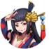 Momiji
Quỷ Nữ Hồng Diệp
Quy Nu Hong Diep
| | Chương 11 - Boss Momiji có 2;
Momiji - Tầng 1 đến 10 có 1;
Kappa - Tầng 5 có 1;
Kamaitachi - Tầng 7 có 2;
Kyuuketsuhime - Tầng 8 có 2;
|
| 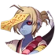 Kyonshi Ani
Khiêu Khiêu Ca Ca
Khieu Khieu Ca Ca
| Nến
Quan Tài
Nen
Quan Tai
| Chương 10 - Boss Shuten Doji có 1;
[Nên đánh] Chương 12 - Boss Yuki Onna có 2 (có thể dùng Kyonshi Ani còn lại để hồi sinh);
Chương 24 - cả 2 Jorogumo có 3;
Ngự hồn - Tầng 5 có 1;
[Nên đánh] Yêu khí - Kyonshi Ani có 3;
Momiji - Tầng 2 có 1;
Ubume - Tầng 4 đến 6 có 1;
Kamaitachi - Tầng 7 có 1;
[Nên đánh] Aoandon - Tầng 6 có 3;
Shishio - Tầng 9 có 1;
Kyuuketsuhime - Tầng 6 có 1;
|
| 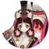 Kairaishi
Khôi Lỗi Sư
Rối
Khoi Loi Su
Roi
| Hình Nhân
Thao Túng
Hinh Nhan
Thao Tung
| Chương 10 - cả 2 Ushi no Kokumairi có 1, cả 2 Kairaishi có 1;
Chương 23 - Boss Kairaishi có 2;
[Nên đánh] Chương 27 - cả 2 Umibouzu có 3;
[Nên đánh] Chương 28 - cả 2 Kairaishi có 3;
Ngự hồn - Tầng 5 có 1;
Youtouchi - Tầng 5 có 1;
Shishio - Tầng 7 có 1;
Kyuuketsuhime - Tầng 5 có 2;
|
| 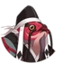 Umibouzu
Hải Phường Chủ
Cá trê
Hai Phuong Chu
Ca tre
| Biển
Râu
Trượng
Bien
Rau
Truong
| Chương 12 - cả 2 Umibouzu có 1;
[Nên đánh] Chương 24 - cả 2 Kyuuketsuhime có 3;
[Nên đánh] Chương 27 - cả 2 Kingyohime có 3, cả 2 Umibouzu có 1;
Ngự hồn - Tầng 3 có 1;
[Nên đánh] Yêu khí - Umibouzu có 3;
Kappa - Tầng 8 có 3;
Kamaitachi - Tầng 10 có 3;
Umibouzu - Tầng 1 đến 10 có 1;
Shishio - Tầng 8 có 2;
Kyuuketsuhime - Tầng 7 có 2;
Lãnh chúa Arakawa - Tầng 4 đến 6 có 1, tầng 8 có 5;
|
| 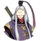 Hangan
Phán Quan
Phan Quan
| | Chương 16 - Boss Hangan có 1;
[Nên đánh] Ngự hồn - Tầng 8 có 1;
Chương 28 - Hangan có 2, Menreiki có 1;
Kappa - Tầng 7 có 1;
Ame Onna - Tầng 9 có 1;
Youtouchi - Tầng 7 có 1;
Ubume - Tầng 7 có 3, 8 đến 10 có 2;
Kamaitachi - Tầng 8 có 2;
Umibouzu - Tầng 9 có 1;
Shishio - Tầng 9 có 1;
Kyuuketsuhime - Tầng 10 có 1;
|
| 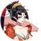 Hououka
Hỏa Phượng Hoàng
Hoa Phuong Hoang
| | Chương 3 - Boss Hououga có 1;
Chương 20 - Hannya thứ hai có 1;
[Nên đánh] Ngự hồn - Tầng 7 có 1;
Kappa - Tầng 5 có 1;
[Nên đánh] Ubume - Tầng 4 có 1, tầng 7 đến 10 có 1;
Umibouzu - Tầng 10 có 1;
Aoandon - Tầng 9 có 1;
|
| Kyuuketsuhime
Hấp Huyết Cơ
Dơi
Hap Huyet Co
Doi
| Dơi
Máu
Doi
Mau
| Chương 21 - cả hai Kyuuketsuhime có 1, boss Hotarugusa có 2;
Chương 22 - Boss Jorogumo có 1;
Chương 24 - cả hai Kyuuketsuhime có 1;
Ngự hồn - Tầng 2 có 1;
Kết giới/PVP - Ít gặp;
[Nên đánh] Momiji - Tầng 7 có 2, tầng 10 có 1;
Kappa - Tầng 8 có 2;
Ame Onna - Tầng 10 có 5;
Ubume - Tầng 10 có 2;
Ootengu - Tầng 10 có 5;
Aoandon - Tầng 10 có 1;
Shishio - Tầng 10 có 1;
Kyuuketsuhime - Tầng 1 đến 10 có 1;
|
| 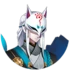 Youko
Yêu Hồ
Cáo
Yeu Ho
Cao
| Thư Sinh
Mặt Nạ
Thu Sinh
Mat Na
| Chương 7 - Boss Youko có 2;
[Nên đánh] Ngự hồn - Tầng 2 có 1, Nghiệp Nguyên Hỏa có 1;
Kappa - Tầng 9/10 có 1;
Youtouchi - Tầng 10 có 2;
Ootengu - Tầng 8 có 4;
Kamaitachi - Tầng 9 có 3;
Aoandon - Tầng 9 có 1;
Kyuuketsuhime - Tầng 6 có 1;
|
| 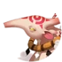 Yumekui
Thực Mộng Mô
Thuc Mong Mo
| Chuông
Ác Mộng
Chuong
Ac Mong
| [Nên đánh] Chương 14 - Norikabe cuối cùng có 1, Boss Yumekui có 5;
Ngự hồn - Tầng 4 có 2, tầng 9 có 1;
Kappa - Tầng 7 có 1;
Aoandon - Tầng 8 có 1;
Shishio - Tầng 7 có 1;
|
| Kamaitachi
Liêm Dứu
Liem Duu
| Chùy
Đinh Ba
Rìu
Chuy
Dinh Ba
Riu
| Ngự hồn - Tầng 5 có 1;
Kết giới/PVP - Thường gặp;
Kappa - Tầng 4 có 1;
[Nên đánh] Khiêu chiến - Chương 18 Kamaitachi có 14;
Ubume - Tầng 9 có 1;
Ootengu - Tầng 7 và 8 có 1;
[Nên đánh] Kamaitachi - Tầng 1 đến 6 và 8 có 1, tầng 7 có 2, tầng 10 có 3;
Umibouzu - Tầng 10 có 1;
Aoandon - Tầng 8 có 1;
|
| 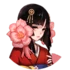 Sakura no Sei
Anh Hoa Yêu
Đào dài
Anh Hoa Yeu
Dao dai
| | [Nên đánh] Chương 8 - cả 2 Sakura có 1, Boss có 1;
Kappa - Tầng 5/10 có 1;
Youtouchi - Tầng 6 có 1;
Ubume - Tầng 6 có 1;
Kamaitachi - Tầng 9 có 1;
Umibouzu - Tầng 9/10 có 1;
Kyuuketsuhime - Tầng 10 có 1;
|
| 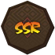 | Ootengu
Đại Thiên Cẩu
Dai Thien Cau
| Lông Vũ
Sáo
Quạt
Long Vu
Sao
Quat
| Chương 15 - Chouchin Kozou cuối cùng có 1;
Chương 18 - Sanbi no Kitsune đầu tiên có 1, Boss Ootengu có 1;
[Nên đánh] Ngự hồn - Tầng 4 có 1, tầng 10 có 2;
[Nên đánh] Kết giới/PVP - Thường gặp;
Kappa - Tầng 9 có 1;
Youtouchi - Tầng 8 đến 10 có 1;
Ootengu - Tầng 8/9 có 2, các tầng còn lại có 1;
[Nên đánh] Ubume - Tầng 4 có 1;
Aoandon - Tầng 9/10 có 1;
Shishio - Tầng 6 có 1;
Lãnh chúa Arakawa - Tầng 10 có 1;
|
| Shuten Douji
Tửu Thôn Đồng Tử
Tuu Thon Dong Tu
| | Chương 10 - Boss Shuten Doji có 2;
Chương 22 - Boss Jorogumo có 1;
[Nên đánh] Ngự hồn - Tầng 7/10 có 1;
Kết giới/PVP - ít gặp;
Momiji - Tầng 6 đến 10 có 1;
Ubume - Tầng 8 có 2;
Ootengu - Tầng 9 có 1;
|
| 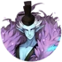 Lãnh Chúa Arakawa
Hoang Xuyên Chi Chủ
Daddy
Hoang Xuyen Chi Chu
Daddy
| | Chương 17 - Boss Lãnh chúa Arakawa có 1;
[Nên đánh] Ngự hồn - Tầng 7 có 2;
Kappa - Tầng 8 có 2;
Kyuuketsuhime - Tầng 9 có 1;
Lãnh chúa Arakawa - Mỗi tầng đều có 1;
|
| 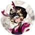 Enma
Diêm Ma
Diem Ma
| Mây
Minh Giới
May
Minh Gioi
| [Nên đánh] Chương 28 - Enma có 1;
[Nên đánh] Ngự hồn - Tầng 6 có 1;
Kappa - Tầng 9 có 1;
Kamaitachi - Tầng 10 có 1;
Shishio - Tầng 9 có 1;
Kyuuketsuhime - Tầng 10 có 1;
|